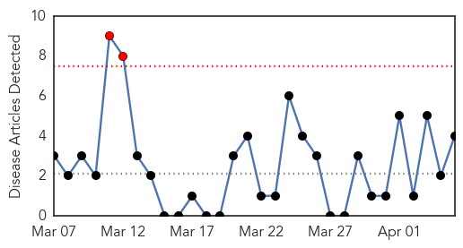
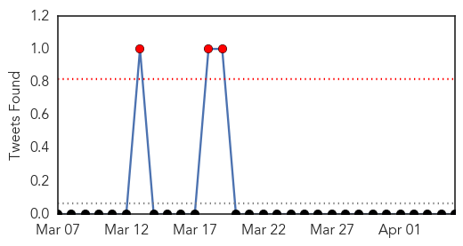
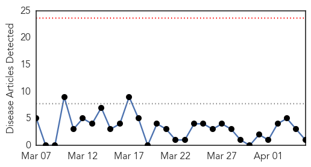
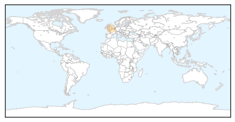

Cholera
30-Day Web Trend
2 alerts, 0 warnings

30-Day Twitter Trend
0 alerts, 0 warnings

Article Locations
Article Confidences

Top Articles:
- 0.987
- U.N. official urges donor community to increase cholera support in Haiti
- 0.907
- Lao gov't formulates plans for possible bird flu outbreak - Xinhua
- 0.569
- S. Sudan Does Not Get Due Attention: Humanitarian Chief
- 0.531
- UN officials cite 'race against time' to prevent humanitarian catastrophe in South Sudan
Top Tweets:
-
No tweets found for Apr 05, 2014
Influenza
30-Day Web Trend
0 alerts, 0 warnings

30-Day Twitter Trend
0 alerts, 0 warnings
Article Locations
Article Confidences

Top Articles:
Top Tweets:
- 0.540
- Relationships between A(H1N1)pdm09 influenza infection and infections with other respiratory viruses http://t.co/lyujuf6BNG